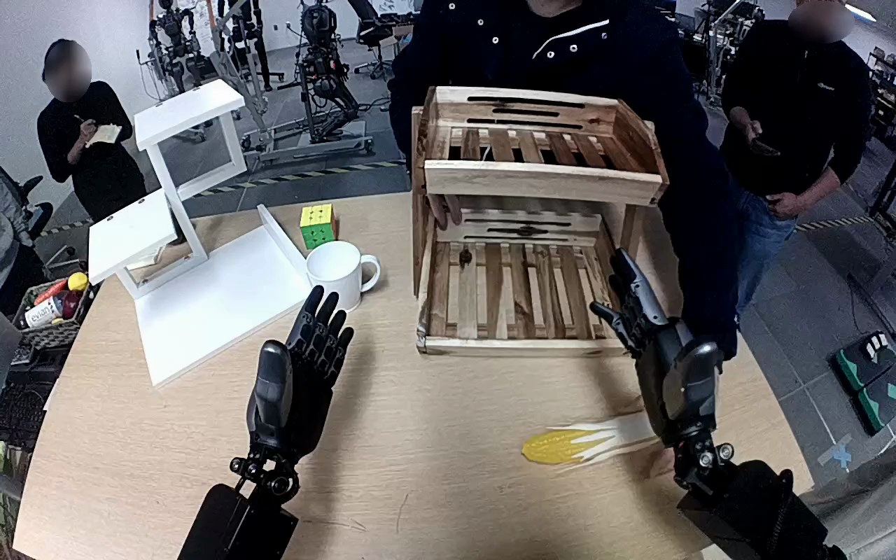

NVIDIA GR1 · 81
Video 81

Visual review action_review.json
{
"prompt_protocol": "humanoid_action_v1",
"prompt_provenance": "visually_authored_from_video_and_initial_frame",
"reviewed_contact_sheets": [
"sheet_001.jpg"
],
"inspected_frame_stride": 2,
"inspected_sampled_frame_count": 60,
"initial_scene": "Robot-centered forward/downward view of both forearms and hands above the table. An ear of corn with exposed yellow kernels and pale husk lies on the right foreground tabletop; a wooden two-tier shelf stands ahead. The left hand is open and idle.",
"observed_sequence": [
{
"start_frame": 0,
"end_frame": 18,
"action": "A person behind the shelf adjusts its position; the robot right hand starts above the right side of the shelf while the left hand stays open.",
"confidence": "high"
},
{
"start_frame": 19,
"end_frame": 54,
"action": "Right arm lowers and brings its open hand around the corn on the right foreground tabletop.",
"confidence": "high"
},
{
"start_frame": 55,
"end_frame": 70,
"action": "Right fingers and thumb close around the pale husk/body of the corn, securing it while still near the table.",
"confidence": "high"
},
{
"start_frame": 71,
"end_frame": 96,
"action": "Right hand lifts the corn from the table and raises it above the upper wooden tray; corn remains held lengthwise.",
"confidence": "high"
},
{
"start_frame": 97,
"end_frame": 111,
"action": "Right arm carries the corn over the upper shelf and lowers it toward the wooden slats.",
"confidence": "high"
},
{
"start_frame": 112,
"end_frame": 119,
"action": "Right hand opens, releasing the corn into the upper tray. Corn rests horizontally on the slats; the open hand remains nearby rather than completing a full withdrawal. A person touches the shelf frame at the end.",
"confidence": "high"
}
],
"arm_hand_roles": {
"right": "Sole active manipulator: closes fingers/thumb around corn, lifts, transports upward, lowers into the upper tray and opens to release.",
"left": "Remains open near the left foreground; does not grasp, stabilize or transfer corn."
},
"anatomical_side_evidence": {
"convention": "Robot-centered forward/downward camera sees the paired forearms extending from the lower edges into the workspace. The idle palm on the camera-left side has its thumb at the outer left edge, consistent with the robot left hand; its counterpart extends from lower right and opposes its thumb against fingers around the corn, consistent with robot right. This matches the source instruction but is grounded in the paired hand/forearm configuration.",
"confidence": "medium-high",
"limitation": "Shoulder attachments and full torso are outside the view; anatomical assignment relies on the egocentric paired forearms and thumb geometry."
},
"coordination": "Unimanual corn manipulation; no hand-to-hand transfer and no assistance from the left robot hand. The person adjusts the shelf early and touches its frame at the end, without taking or delivering the corn.",
"terminal_state": "Corn rests across the slats inside the upper wooden tray. The right hand is open just above/beside it, and the left hand remains open in the foreground.",
"uncertainties": [
"Full shoulder attachments are outside the egocentric view; hand sides are established from paired forearm positions and palm/thumb geometry. Exact finger-to-husk contact surfaces are partly occluded by the hand."
],
"annotation_discrepancies": [],
"evidence_frame_indices": [
0,
28,
60,
68,
76,
90,
106,
114,
119
],
"selected_execution_status": "success",
"inspection_coverage": {
"all_source_frames": "Every second decoded frame from 0 through 118 inspected in the complete contact sheet; final frame 119 separately inspected at native resolution.",
"native_initial_png_inspected": true,
"native_transition_frames": [
28,
60,
68,
76,
90,
106,
114,
119
]
},
"video_id": "81",
"dataset": "NVIDIA_GR1_100",
"dedicated_review_agent": "review_gr1_81",
"review_source_video": "NVIDIA_GR1_100/81/original/original.mp4",
"source_frame_count": 120,
"source_fps": 20.0,
"native_detail_frames": [
28,
60,
68,
76,
90,
106,
114,
119
],
"world_model_prompt": "The robot uses its right hand to grasp the ear of corn around its pale husk on the right side of the table and lift it clear. It carries the corn upward over the two-tiered wooden shelf, lowers it into the upper tray, and opens its hand, leaving the corn resting across the wooden slats. Keep the camera fixed; preserve robot geometry, physically valid joint motion, and normal gripper opening and closing.",
"original_task_instruction": "Use the right hand to pick up corn from from the right side of the table to to the top of the two-tiered wooden shelf.",
"selected_segment": {
"start_frame": 0,
"end_frame_exclusive": 120,
"reason": "Complete original single-task reference; no cropping or trimming requested."
},
"source_video_sha256": "e0a14c7ef56812ffef6b3bc904b19bb294bb34e77b7bf9a4f9df43abf0c287d0",
"review_completed_at": "2026-10-13T18:34:42.463881+00:00"
}